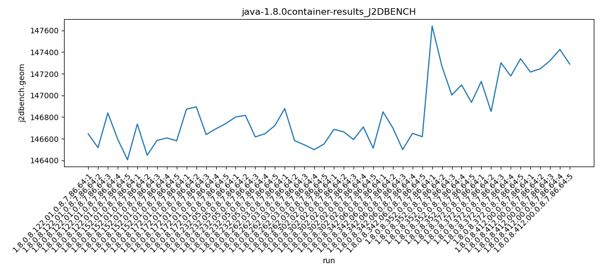
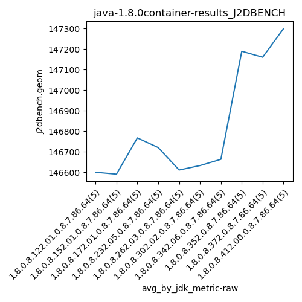
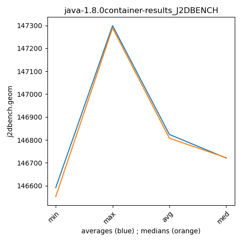

java-1.8.0 J2DBENCH
Context at bottom
/home/jvanek/git/benchmarks-in-nested-virtualisation-toolchain/final_results/container_results/container-results_RADARGUNs1
java-1.8.0
J2DBENCH
/home/jvanek/git/benchmarks-in-nested-virtualisation-toolchain/final_results/container_results/container-results_DACAPO
java-1.8.0
J2DBENCH
/home/jvanek/git/benchmarks-in-nested-virtualisation-toolchain/final_results/container_results/container-results_JMH
java-1.8.0
J2DBENCH
/home/jvanek/git/benchmarks-in-nested-virtualisation-toolchain/final_results/container_results/container-results_J2DBENCH
java-1.8.0
J2DBENCH
container-results_J2DBENCH
final score
Expected number of java-1.8.0 JDKs: 7
1st avgmed_alljdks_metric:
/home/jvanek/git/benchmarks-in-nested-virtualisation-toolchain/final_results/result_processing.py /home/jvanek/git/benchmarks-in-nested-virtualisation-toolchain/final_results/container_results/container-results_J2DBENCH j2dbench.geom False
values: [146645, 146518, 146838, 146597, 146406, 146736, 146448, 146584, 146608, 146581, 146873, 146895, 146639, 146692, 146740, 146801, 146816, 146617, 146647, 146722, 146879, 146583, 146544, 146500, 146552, 146687, 146664, 146593, 146709, 146513, 146848, 146701, 146500, 146650, 146619]

Expected number of iterations: 5
final number of values: 35 out of 35
Pass rate: 100.0%
values: (146406, 146895, 146655.57142857142, 146645)

** accuracy from all jdks and runs
more is better
MIN: 146406
MAX: 146895
AVG: 146655.57142857142
MED: 146645
Relative differences 1:
MIN-MAX: 0.0 %
MIN-AVG: 0.0 %
MIN-MED: 0.0 %
MAX-MIN: -0.0 %
MAX-AVG: -0.0 %
MAX-MED: -0.0 %
AVG-MED: -0.0 %
stored to java-1.8.0.properties. sort | uniq that!
2nd avgmed_by_jdk_metric:
values: [146600.8, 146591.4, 146767.8, 146720.6, 146611.6, 146633.2, 146663.6]

values: [146597, 146584, 146740, 146722, 146552, 146664, 146650]

values: (146591.4, 146767.8, 146655.57142857142, 146633.2)
values: (146552, 146740, 146644.14285714287, 146650)

** accuracy from all jdks where runs were avged
more is better
MIN: 146591.4
MAX: 146767.8
AVG: 146655.57142857142
MED: 146633.2
Relative differences 1:
MIN-MAX: 0.0 %
MIN-AVG: 0.0 %
MIN-MED: 0.0 %
MAX-MIN: -0.0 %
MAX-AVG: -0.0 %
MAX-MED: -0.0 %
AVG-MED: -0.0 %
stored to java-1.8.0.properties. sort | uniq that!
** accuracy from all jdks where runs were medianed
more is better
MIN: 146552
MAX: 146740
AVG: 146644.14285714287
MED: 146650
Relative differences 1:
MIN-MAX: 0.0 %
MIN-AVG: 0.0 %
MIN-MED: 0.0 %
MAX-MIN: -0.0 %
MAX-AVG: -0.0 %
MAX-MED: -0.0 %
AVG-MED: 0.0 %
stored to java-1.8.0.properties. sort | uniq that!
/home/jvanek/git/benchmarks-in-nested-virtualisation-toolchain/final_results/container_results/container-results_RADARGUNs3
java-1.8.0
J2DBENCH
/home/jvanek/git/benchmarks-in-nested-virtualisation-toolchain/final_results/container_results/container-results_SPECJBB
java-1.8.0
J2DBENCH
pass rates:
container-results_J2DBENCH=100.0%
Context:
- container_results
- J2DBENCH